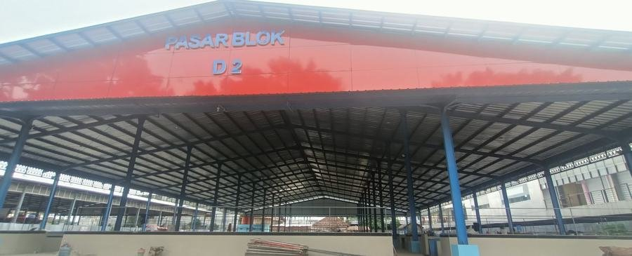
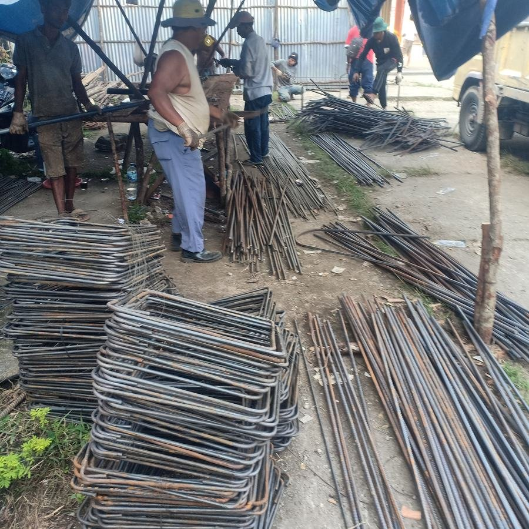
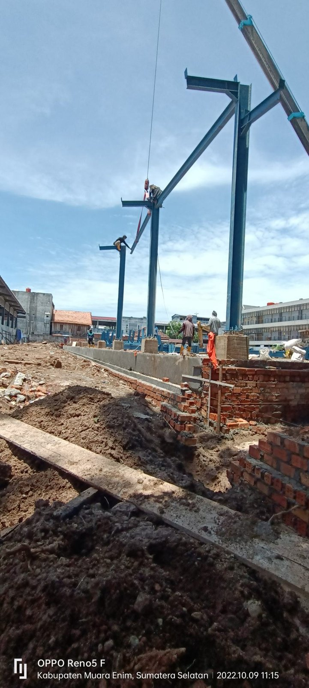

Konstruksi yang presisi, distribusi yang tepercaya, transportasi yang tepat waktu, serta alat berat yang selalu siap kerja — PATTIMURA UTAMA menghadirkan keempatnya dalam satu genggaman, mengiringi proyek Anda dari gambar rancangan hingga hari serah terima.

Struktur organisasi PATTIMURA UTAMA dirancang untuk menangani proyek lintas sektor tanpa mengorbankan detail teknis di tiap bidangnya.
Anda tidak perlu mencari kontraktor berbeda untuk tiap jenis proyek. Dari renovasi rumah kecil hingga fasilitas publik berskala kota, tim kami menangani perencanaan sampai serah terima dalam satu koordinasi yang sama.
Setiap proyek — sekecil apa pun — dimulai dari perhitungan struktur dan spesifikasi yang benar. Tampilan akhir yang baik lahir dari fondasi teknis yang tidak dikompromikan.
Dokumentasi dari proyek Pembangunan Pasar Blok D2, Muara Enim.


Dua hal yang sering dicari sebelum berdiskusi lebih jauh — panduan seputar dunia konstruksi, dan bahan-bahan yang bisa langsung diunduh.
Ceritakan kebutuhan Anda — kami bantu petakan cakupan kerja, estimasi, dan jadwalnya.